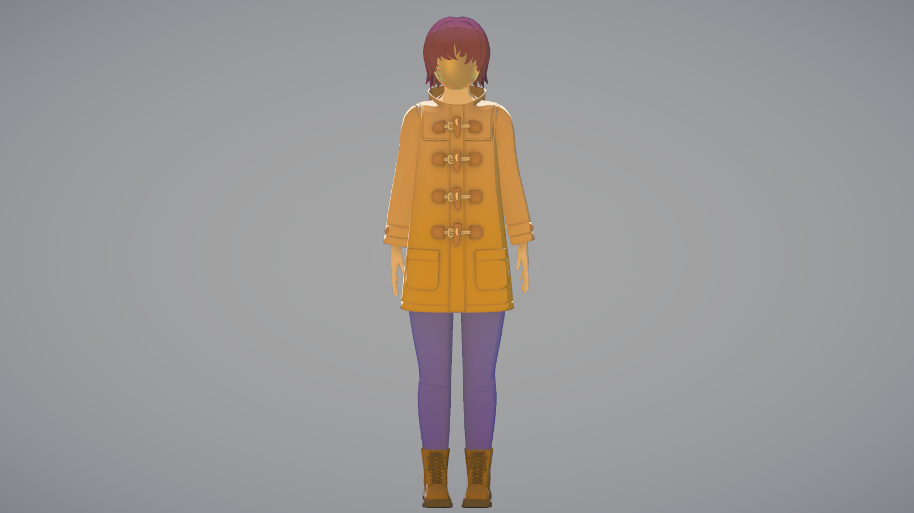
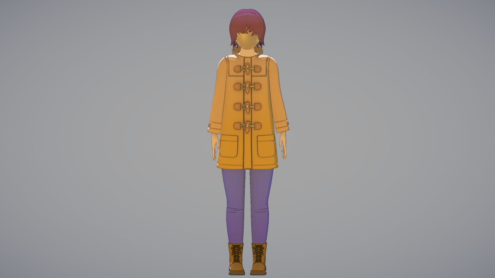
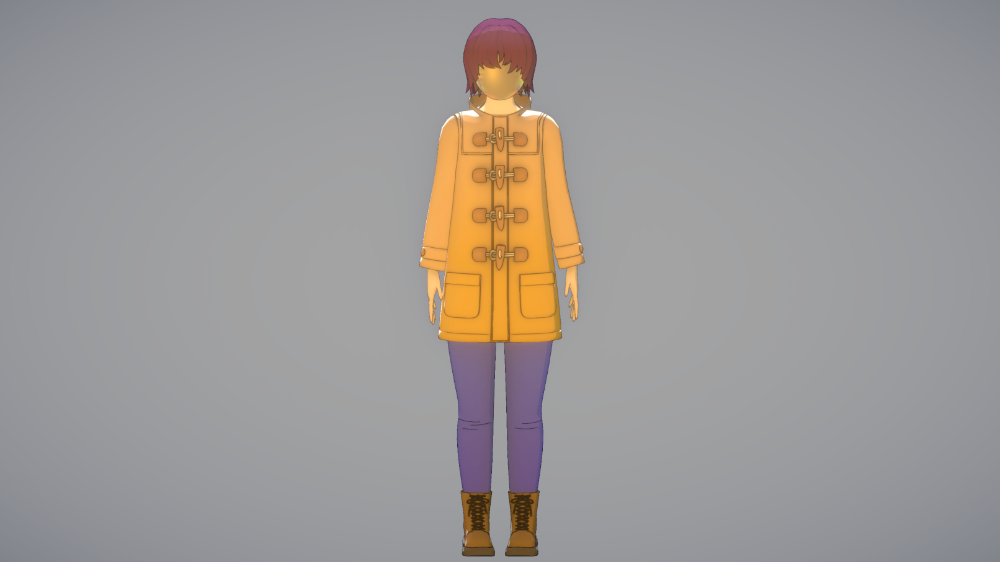
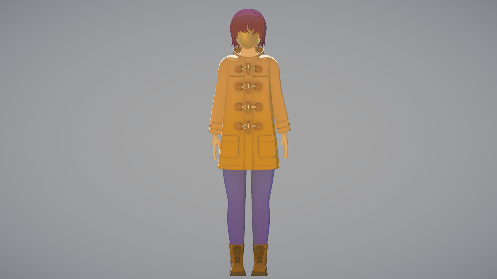
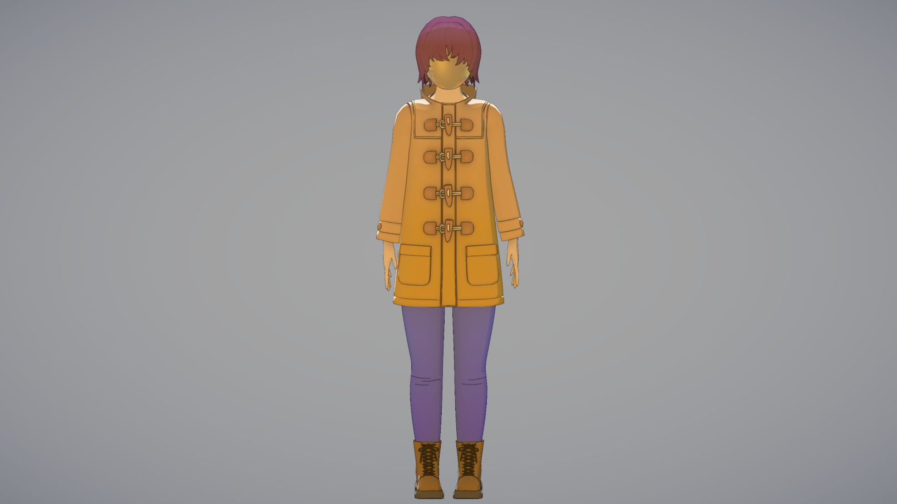
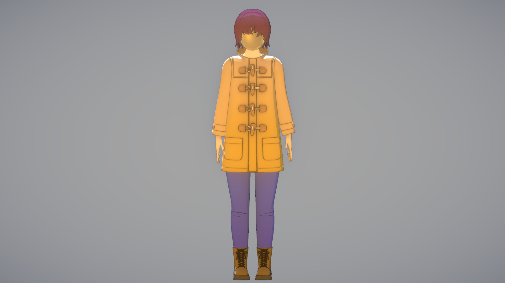
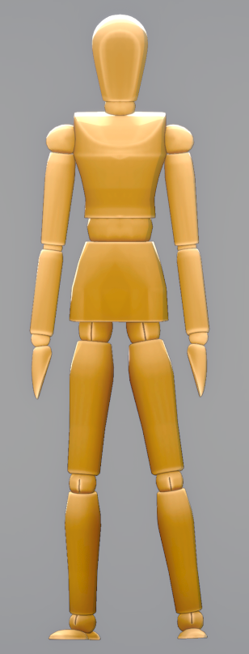
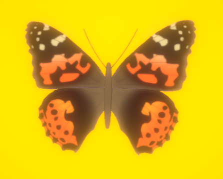

The Painted Lady Hotel Supporting Material
Produced by Future Arboretum
All materials shown are concept or work in progress pieces.
Images
The current work in progress steps for rendering a character.
- Setting vertex colours in blender.
- Rendering the character in Unity using a cel shader.
- Using vertex colours, depth, and normals in a post process effect to add outlines.
- Adding a post process bloom effect to soften and closer resemble modern anime.
 





First pass of the basic mannequin enemy.
First pass of the namesake of the hotel, the painted lady butterfly.
Videos
Please ensure videos are playing at 1080HD as YouTube sometimes starts them at 360p.
An example of how conversations and dialogue will play out in the game.
An example cutscene. The character sitting on the train is a placeholder and is meant to be the woman in the main character's visions.
Work in progress of the main characters mask effect.
A 360 rotation of the main character
An example of the weak point shooting and limb breaking concept.
Music
A concept song for how things will sound during more exploratory situations. A hazy dreamlike atmosphere.
A concept song for how things will sound in more dangerous situations. An oppressive fearful atmosphere.